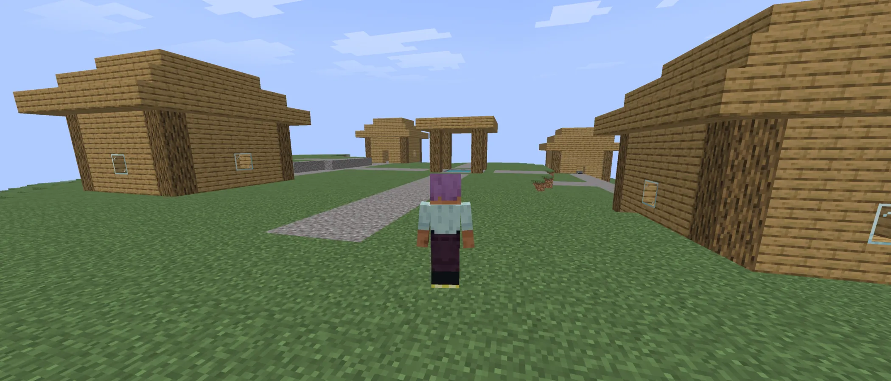
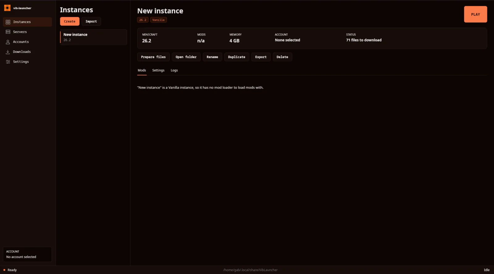

Vib Studios
A Minecraft server
written entirely by AI
One prompt at a time. It connects, generates terrain, takes clients from Minecraft 1.8 through 26.1.2 (excluding 1.16, 1.16.1 and 1.19.3), and now has a real survival loop.
Alongside it: Vib-launcher, a native desktop launcher and vib-MC control panel. One Avalonia application, no browser and no Electron.

01 — vib-MC
A survival loop,
one prompt at a time
Fourteen packages, zero humans. The whole thing was coaxed into existence with prompts, then patched with more prompts. What follows is straight from the README, with no marketing layer in between.
What actually works
- Actually starts
- Handshake, login, spawn — from Minecraft 1.8 to 26.1.2, minus 1.16, 1.16.1 and 1.19.3.
- People can join
- One prompt at a time, and now with a real survival loop that persists across restarts.
- Terrain generates
- Procedural, seeded, deterministic. Biomes, caves, ores, trees, a village at spawn.
- Plugin API
- The interface exists. Build a plugin in the browser and it compiles to Java.
- Mobs
- None yet. Players are the only thing the server sends.
- Nether & End
- Both real, both reachable. Build the portal yourself.
Java 8 or newer. One jar, no installer and no control panel: drop it in a folder, run it, and point a client at port 25565.
- Release
- v0.0.7
- Published
- 2026-08-28
- Size
- 10.4 MB
- Licence
- GPL-3.0
v0.0.7 is the current stable baseline.
02 — Vib-launcher
Three jobs,
one window
The launcher does three separate jobs from one window: it keeps Minecraft instances apart from each other, it signs accounts in, and it runs vib-MC servers on the same machine. Instances and servers never share a directory.

Isolated instances
Microsoft and offline accounts, mod loaders, and mods from Modrinth, each in a directory that belongs to it alone.
Local servers
Start, stop and watch a vib-MC server on the same machine, pointed at the jar you downloaded.
A real application
Native Avalonia. No browser, no WebView, no Electron and no embedded web page anywhere in it.
Linux is the supported platform: x86-64 and aarch64 builds, and the .NET 10 runtime. A Windows build is published too, but it is compiled and unit-tested rather than actually run.
- Release
- v0.2.0
- Published
- 2026-09-09
- Size
- 38.2 MB
- Runtime
- .NET 10
v0.2.0 is the current release.
Contributors